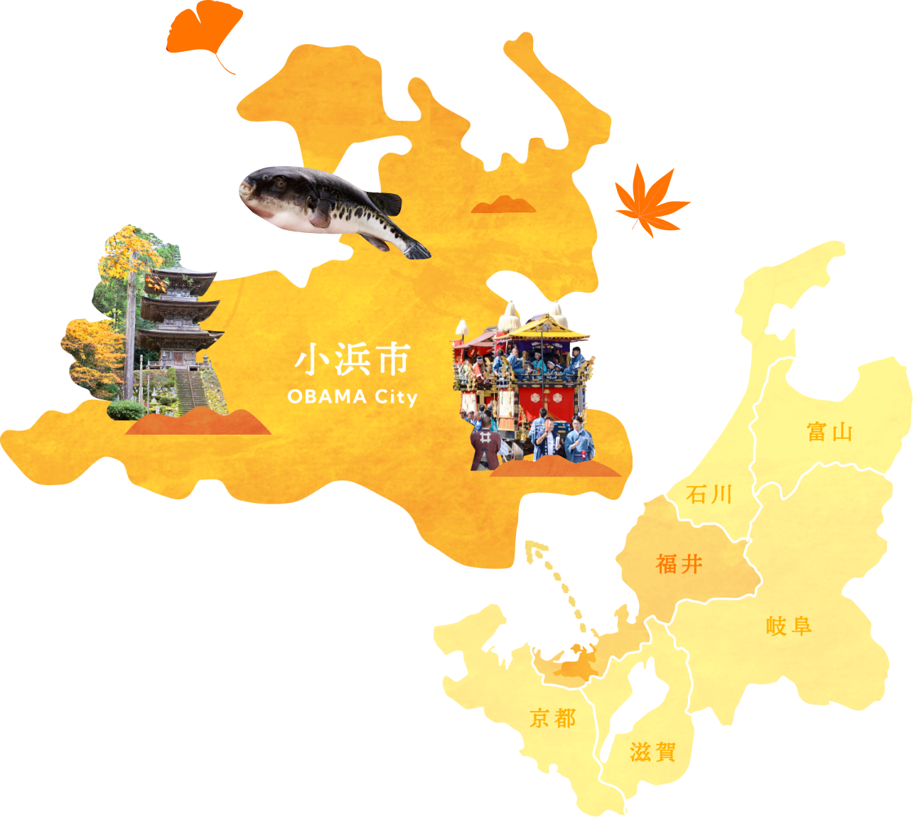

福井県小浜市の魅力(若狭おばま)
若狭おばまには、日常でのもやもやを晴らしてくれるような「癒し」があります。
お腹いっぱい食べられるおいしい地魚、見ているだけでリラックスできる穏やかな海があります。
食と往来の歴史に彩られた癒しの町
若狭おばまの魅力は「海」・「食」・「歴史」・の３つが合わさっています。
その組み合わせは無限大。あなたを癒す過ごし方が見つかります！

若狭おばまには、日常でのもやもやを晴らしてくれるような「癒し」があります。
お腹いっぱい食べられるおいしい地魚、見ているだけでリラックスできる穏やかな海があります。
若狭おばまの魅力は「海」・「食」・「歴史」・の３つが合わさっています。
その組み合わせは無限大。あなたを癒す過ごし方が見つかります！